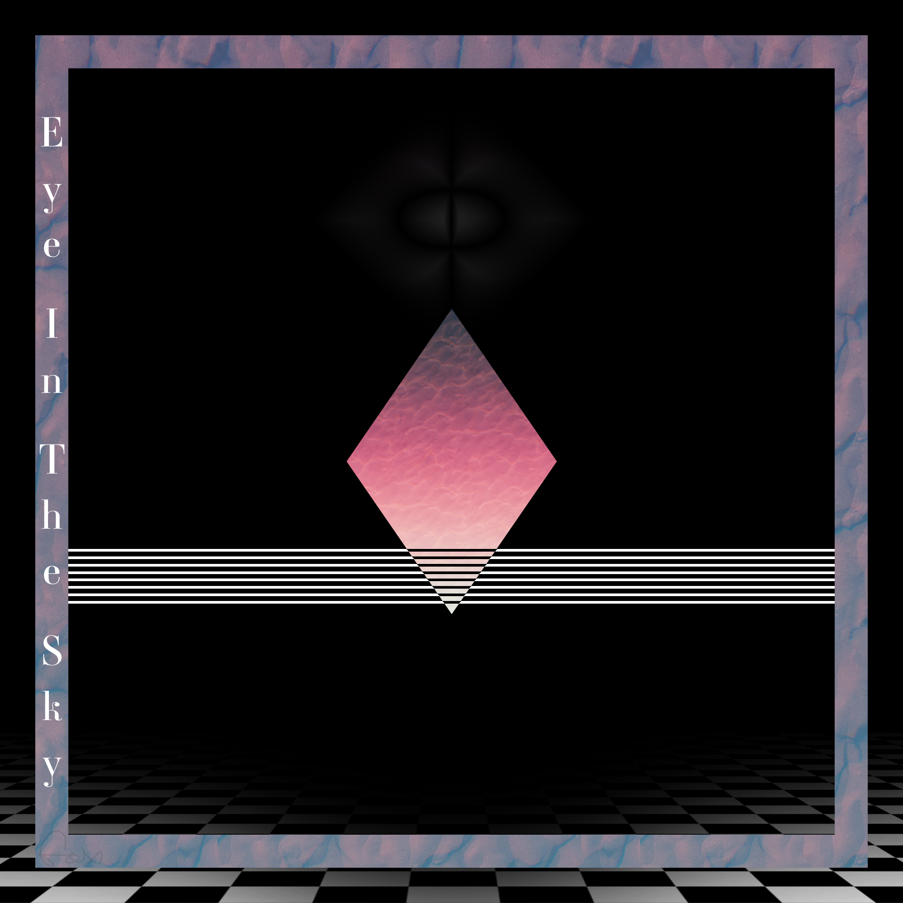

Early Art
The early artwork is very amatuer in execution but still shares common design elements with later pieces. From the very start I wanted to make Retrowave styled art but with my own spin on everything. All of the real life images I manipulate are taken from around the local area. I practiced a lot and made many crude pictures but eventually I started to incorporate what I learning and expanded my knowledge of Photoshop to take things to the next level.

Intermediate Work
I would start to take inspiration from all sorts of media that I would see. If there were design elements I liked from anything, I would learn to make it. During this time I started to find my workflow and became much more efficient. Also, learning new techniques allowed to create assets from scratch rather than looking up tutorials online. This is the point where I started to develop my style while introducing new methods to my workflow.

Commission Work
At this point it had only been roughly a year since I started to take Photoshop seriously. I was just starting to put myself out there and advertising. I really wanted to make album covers and started to focus on what it took to make a good one. eventually, I got my first job, and they really liked my work! This created a chain reaction of smaller jobs here and there thanks to word of mouth from the person I worked with. Since album covers are phyiscal products, I got into the printing process and started to become aware of what I needed to do to make sure my work is able to be printed in CMYK correctly. This lead me to work with other media like posters as well.
